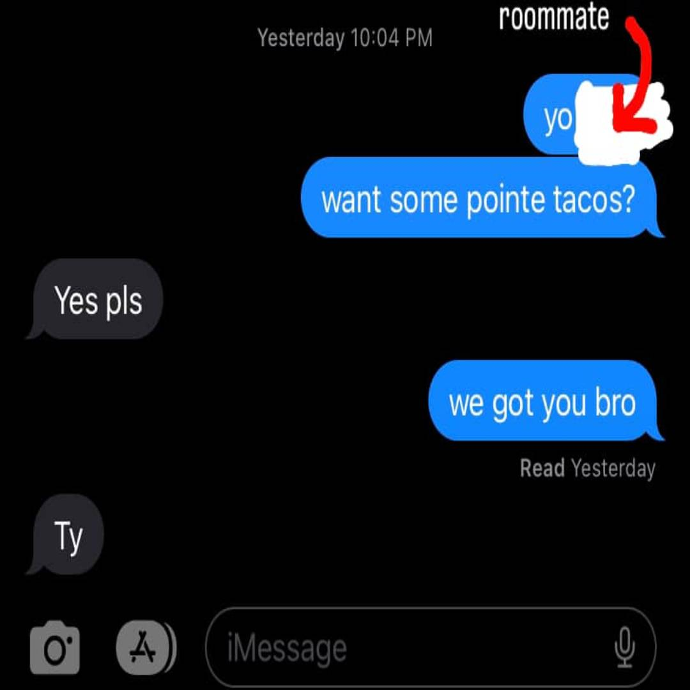
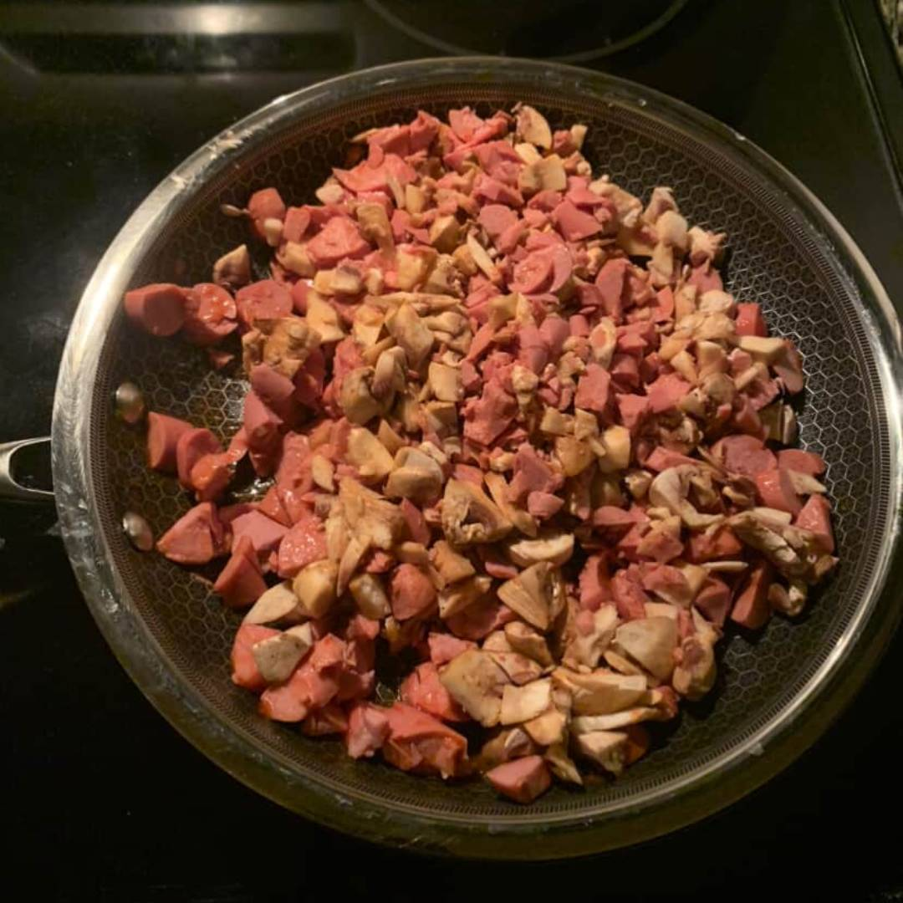
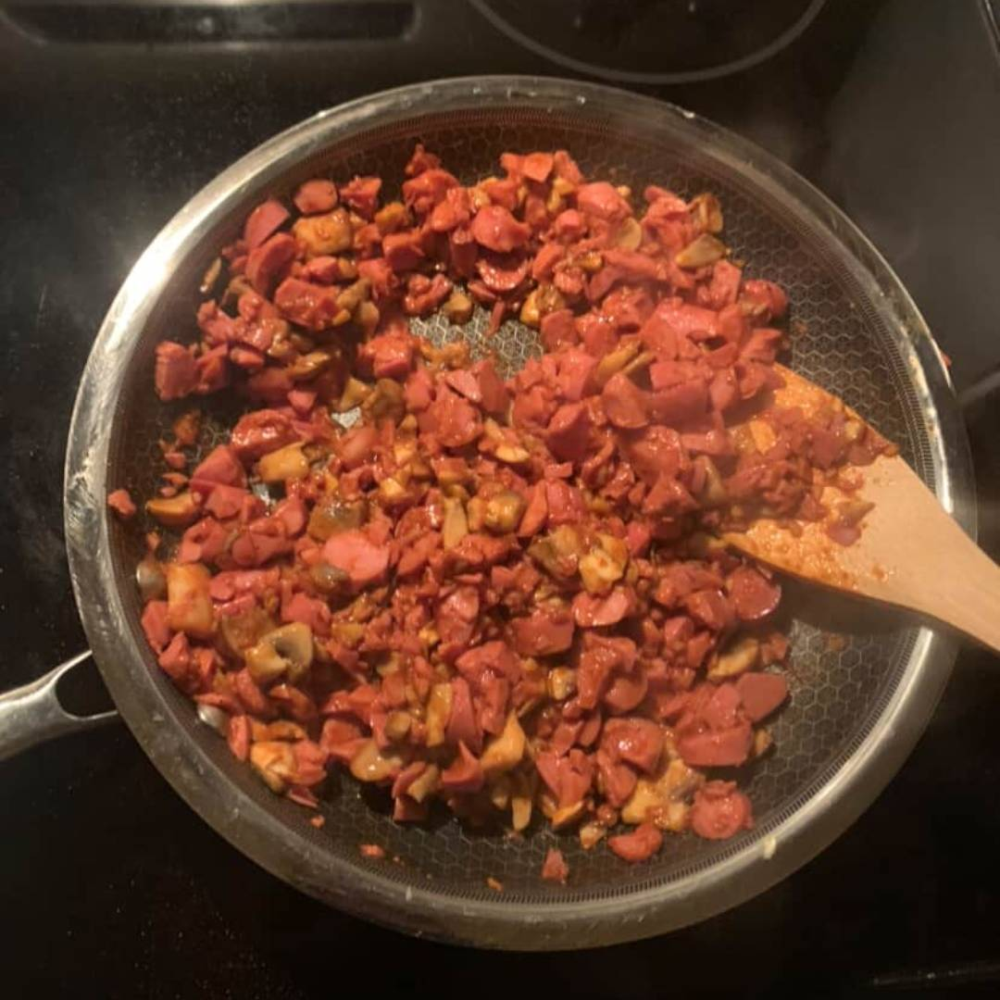
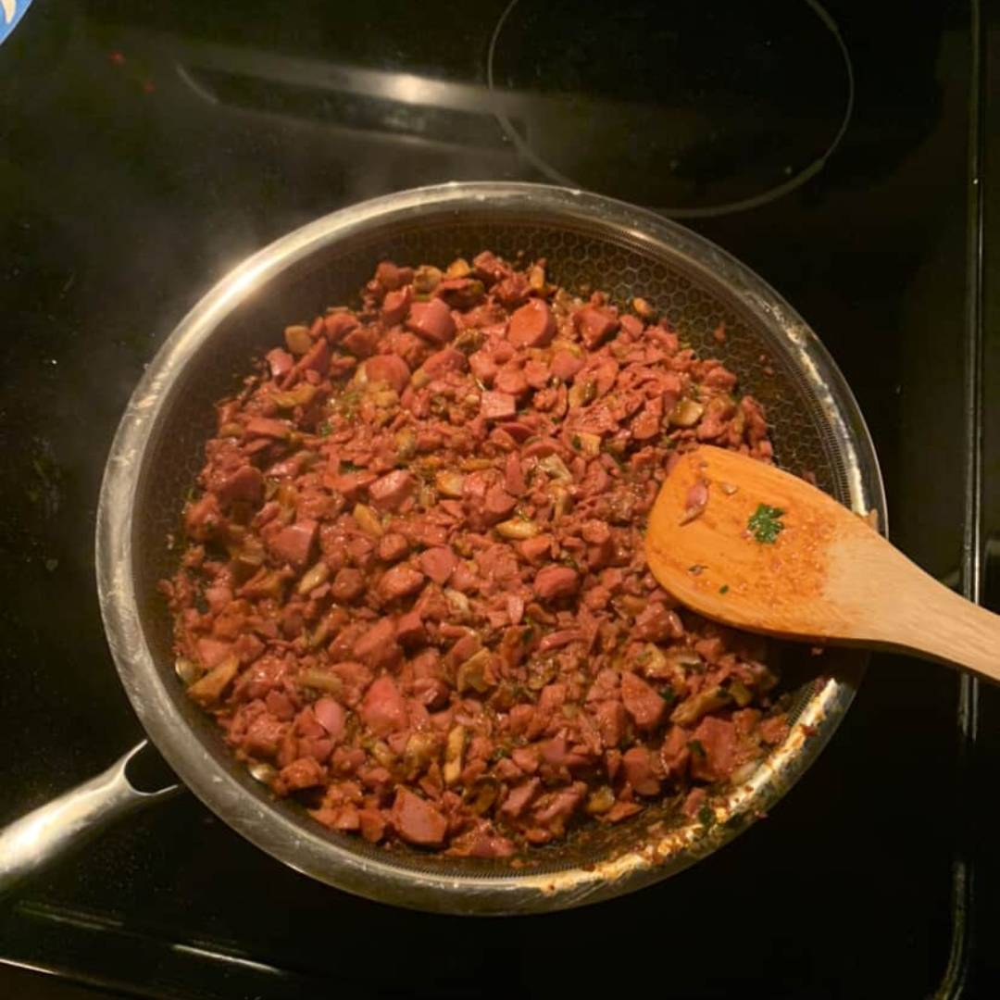
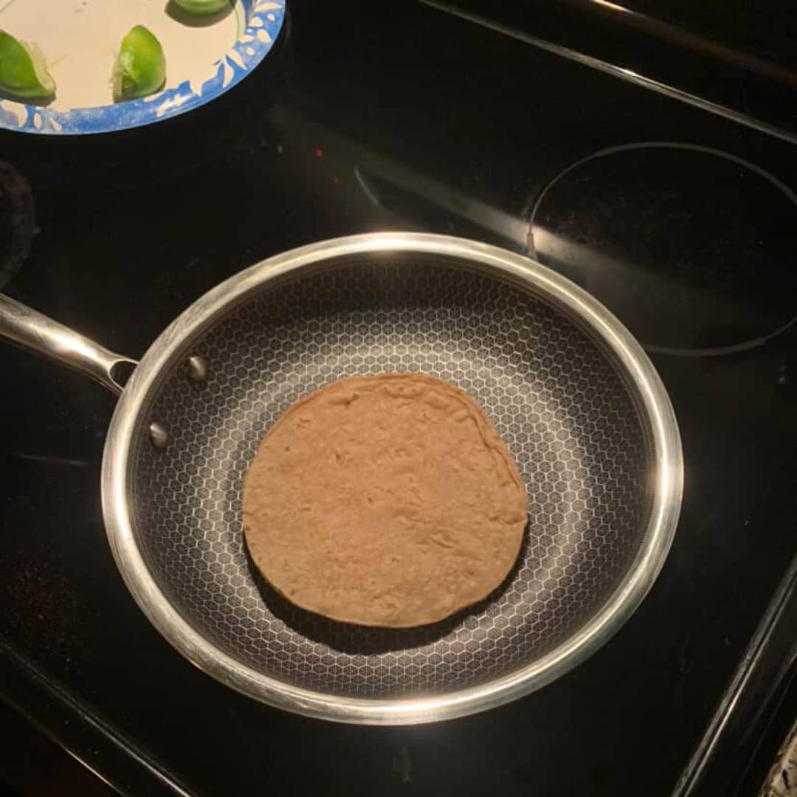
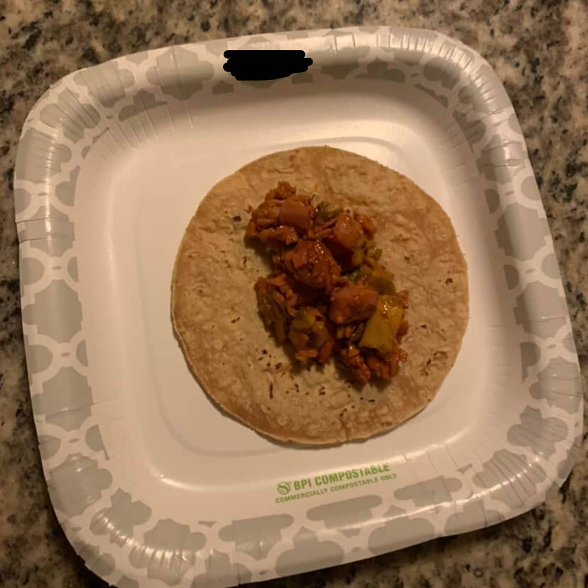

|
View my profiles on: |
Food Review: Pointe Tacos + How to cook them!!8/31/26  Hey, Silverwared.com readers! Chef Shiru here and, I'm doing a special edition of the Food Review series. This time I will be reviewing my specialty dish: Pointe Tacos. I will also have the recipe for this dish in this article. Before we even begin... What are Pointe Tacos?They're just tacos made at the pointe. That's where I live, don't dox me pls. I actually made Pointe Tacos on accident. Basically, I wanted to eat acorns one day so, I searched for an acorn recipe online. I bought a bunch of ingedients for these acorns that I ended up not even cooking because I was too lazy to go through the entire preparation process of making acorns non-toxic to humans. I still had a bunch of unused ingredients sitting in my room so I decided to use them for making tacos, I just needed to get tortillas and some meat. Below, I will list all of the exact ingredients that went into the tacos I made. If you want to follow this recipe, please follow it EXACTLY or else it will taste different.
Preparation:
     I know that it might not look that good, especially if you're a human (Yes, this is human food). However, in my personal opinion, I think it's pretty good. It doesn't taste bad but, it doesn't necessarily taste that good to be honest. It has a very interesting flavour, that's the main reason I even bothered to cook this meal more than once. Also, if you cook something yourself, you're more likely to enjoy eating it a lot more. Since you're harvesting the fruits of your labor, you can appreciate those fruits a lot more. Even if those fruits look like slop that gets fed to livestock. Last thing: I am warning anyone that seriously wants to try cooking this. I don't even know what's in Vienna Sausages but I kind of don't want to find out. If they're being sold in stores, I guess it can't be that bad. They definitely give off very haram vibes though. Anyways, if you like eat this and like your stomach starts hurting, I'm sorry. Please don't like sue me or whatever. |
|
View my profiles on: |
 Soundcloud
Soundcloud iTunes
iTunes YouTube
YouTube Instagram
Instagram